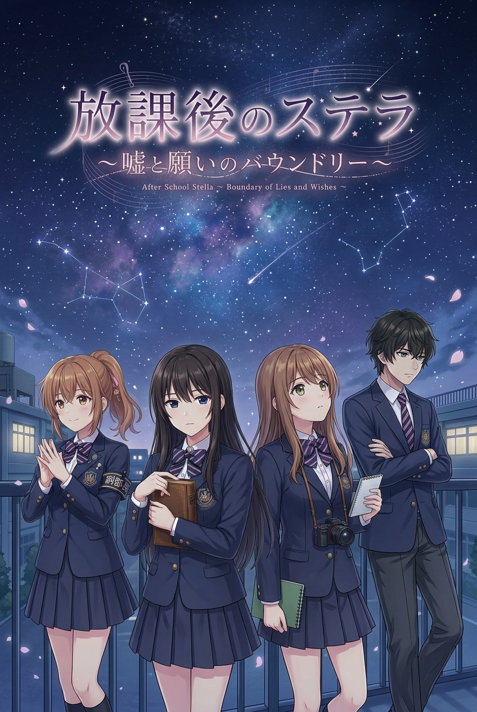

讓故事成長。
和AI一起推敲情節與臺詞，改成符合人物的話語，逐一確認選擇之后的情感。
STORY & DIALOGUEONE CREATOR, WITH AI.
心里有想做成的故事。所以，在每天的零散時間里和AI一起創作。一人制作的戀愛冒險。
免費玩到最後／無需安裝／全年齡／日英中配音

01 / BEHIND THE SCENES
與AI討論，試做，實際查看，再修改。不斷重復這些交流，逐漸把故事做成可以游玩的形式。
和AI一起推敲情節與臺詞，改成符合人物的話語，逐一確認選擇之后的情感。
STORY & DIALOGUE借助AI準備角色和場景圖片，再調整畫風、表情與構圖，直到與故事場景相合。
ART & DIRECTION從存檔、分支到片頭的鏡頭演出，與AI共同實現。實際運行，發現不自然的地方，再持續修改。
CODE & MOTION作品的方向和最終保留的內容，由創作者決定。與AI一起擴大能嘗試的范圍，一步步完成。
劇情文本改寫及片頭MV使用ChatGpt-6，配音制作使用ElevenLabs。主人公以外的臺詞均收錄日英中配音，琴葉使用Leira較克制的演繹。
02 / SEE WHAT WE MADE
正式版片頭／約1分43秒
給靜止的畫面加入縱深、光影和鏡頭運動。從分鏡開始反復調整，配上主題曲的片頭動畫。
STILLS + CODE + DIRECTION03 / YOUR AFTER SCHOOL
放學後的星光：謊言與願望的邊界
舞臺是熟悉的學校與放學後。用你的選擇，走近藏在三位少女笑容與沉默后的真心。

總是開朗微笑的櫻。慢慢了解，那笑容后面的心情。
VOICE / Suzu
珍惜安靜時光與音樂的琴葉。逐漸靠近，難以用話語說盡的心意。
VOICE / Leira

相機和筆記本不離手的青梅竹馬，真晝。一起尋找，想要留下的時間。
VOICE / Yuki
MADE IN SPARE MOMENTS. READY FOR YOURS.
一個人和AI，究竟能做到哪里？請在故事里，親自確認答案。
免費開始游玩免費玩到最後・全年齡／包含聲音／手機建議橫屏